Other studies · location model
Expected Shot Value
Compare estimated shooting efficiency by court location.
Data through Apr 12, 2026
Zone baseline
Color: expected eFG%. Marker size: attempts.

Live touch and keyboard inspection is available in the application.
Inspect a court location →Location model
Same locations · coordinate-based model.

Both courts show the same observed shot locations; their expected values use different models.
Location alone does not describe defenders, contest level, or the shot clock.